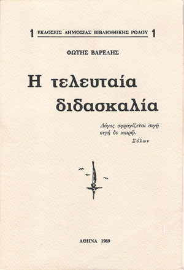

... Τον ρώτησα τότε εκείνονα τον δάσκαλο, αν πιστεύει στις προλήψεις, ξεκινώντας από τούτα που’λεγε: πως είναι παραφήσματα των περασμένων γενεών των ανθρώπων μας, που αν τα κοιτάξεις με το μάτι της συνέχειας θα δυσκολευτείς να τα ρίξεις στα σκουπίδια, όλα και με μιάς.
Ίσως περιφρονόντας τα, να περιφρονούμε τη ζωή μας την ίδια. Τάφεραν, έλεγε, οι απλοϊκοί ανθρώποι, οι πρώτοι που άρχισαν να σκέφτονται και μαζί να φοβούνται και να προσδοκούν, μέσα στα τρομερά φαινόμενα των τόπων, με τον ίδιο τρόπο πούφεραν λέξη – λέξη και τη γλώσσα μέσα στους αιώνες. Τότε που δεν υπήρχαν ειδικοί δασκάλοι και κριτές. Κι αφού κρατούμε και φροντίζουμε στα μουσεία ό,τι τερατώδες κατασκεύασμα ανθρώπινο, και διατηρούμε πυραμίδες, μαυσωλεία και κάστρα τυράννων, που πληρώνουμε να τα δούμε και να τα θαυμάσουμε. Ας τα κρατήσουμε κι αυτά για μάς τους ίδιους˙ να θυμούμαστε τις αγωνίες και τους φόβους των παππούδων μας.
Τον ρώτησα, λοιπόν, αν πιστεύει και μου απάντησε.
-Μαρέσει να πιστεύω.
Επιστολή 13 (Οι Προλήψεις)